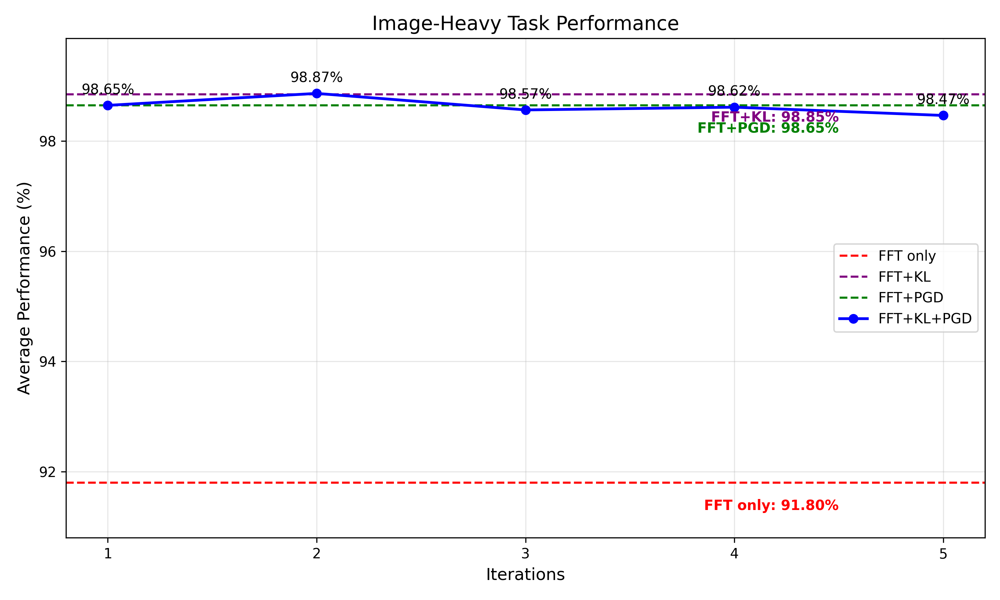
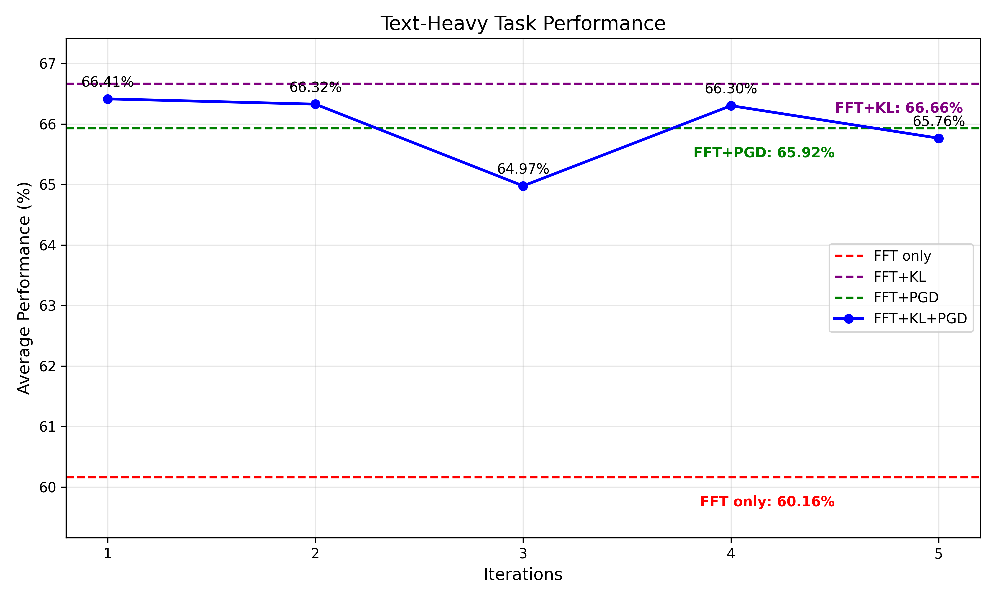
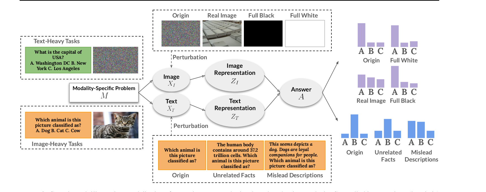
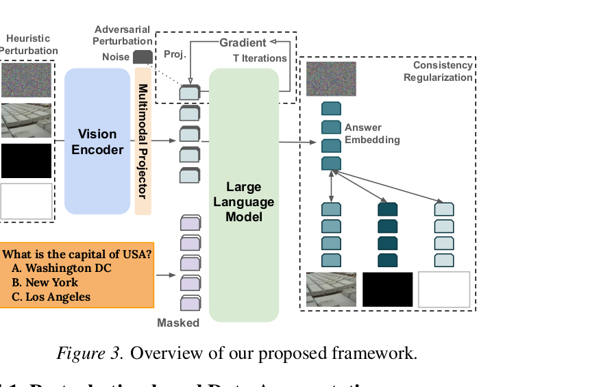
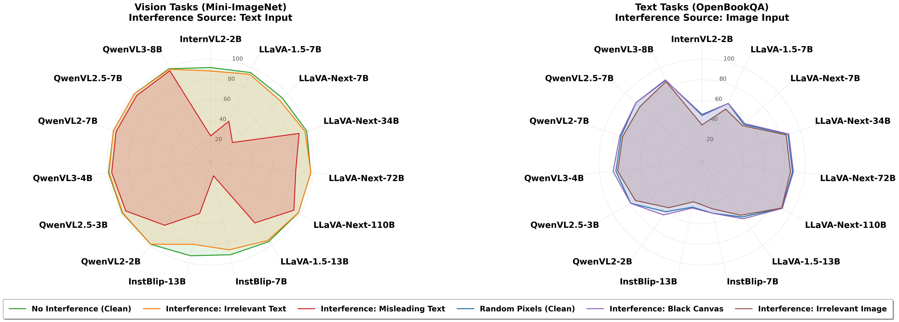
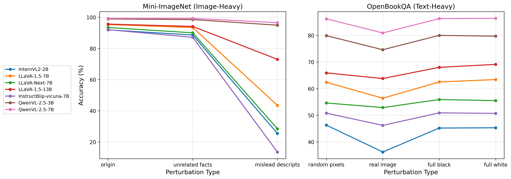
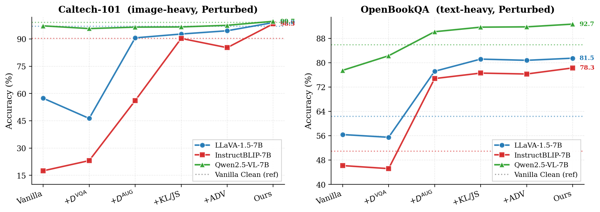
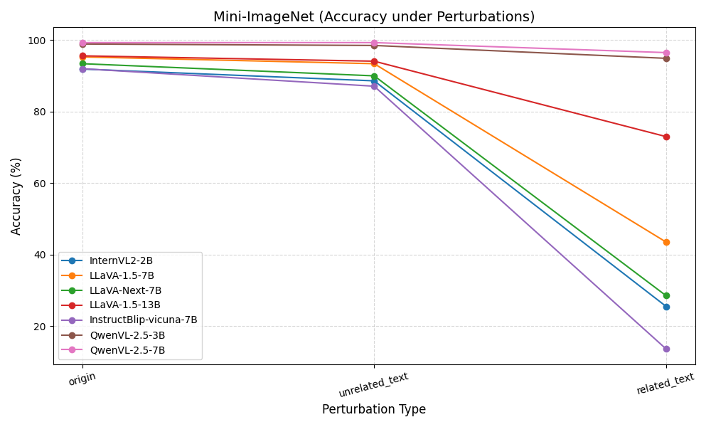
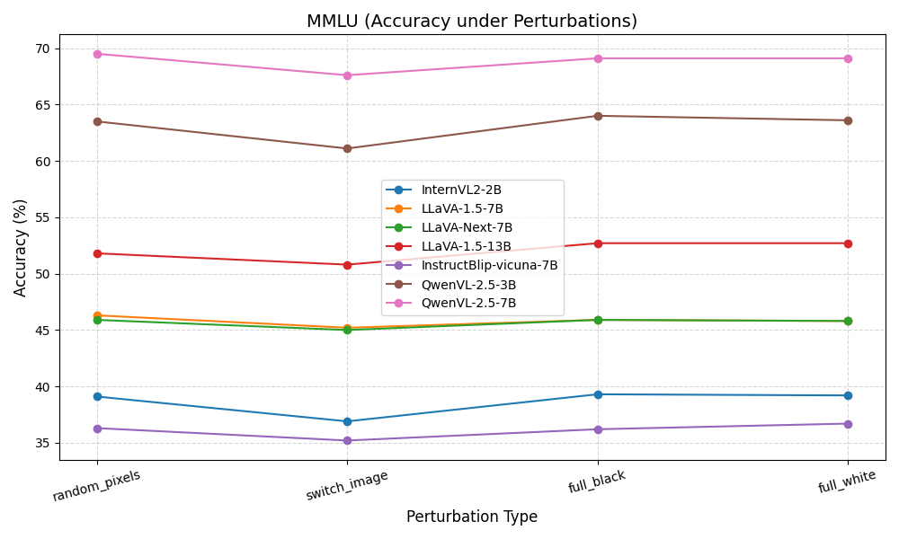

Abstract
Multimodal Large Language Models achieve strong benchmark performance, but remain fragile when irrelevant modalities contain spurious or misleading signals. We identify this failure as Modality Interference, where task-irrelevant image or text content improperly changes model predictions. We propose a causal perturbation-based evaluation protocol to measure this behavior across image-heavy, text-heavy, and VQA tasks. To mitigate it, we introduce a perturbation-aware fine-tuning framework combining heuristic and adversarial perturbations with consistency regularization between clean and perturbed inputs. Across diverse MLLM families and scales, our method improves both unimodal robustness and standard multimodal performance.
What is Modality Interference?
A model exhibits modality interference when its answer changes because of a modality that should be irrelevant to the task. We make this concrete with two failure cases.
Image + misleading text → prediction collapse
The image determines the answer, but a misleading caption such as "this seems to depict a dog" overrides the visual evidence. Strong MLLMs follow the text and produce the wrong label.

QA + irrelevant image → reasoning degradation
A pure text QA question should be answered from text alone, yet attaching an unrelated real image (or even a black/white canvas) shifts the model's distribution and degrades accuracy on standard benchmarks.

Four observations across MLLM families
Pervasive Failure
Modality interference appears across LLaVA, Qwen-VL, InternVL, and InstructBLIP families.
Scale Helps, But Doesn't Solve
Larger models are more robust, but interference remains observable even at large scales.
Misleading Text Hurts Vision
Image-heavy classification can collapse when text contains incorrect but plausible descriptions.
Training Restores Robustness
Our method improves clean and perturbed performance while preserving VQA accuracy.
Measuring Interference as a Causal Effect
Treat irrelevant modality perturbations as interventions. If the task-relevant modality stays unchanged, but the prediction changes after perturbing the irrelevant modality, the model exhibits interference.

What we intervene on, and how
Each task category fixes the relevant modality and perturbs the irrelevant one. Balanced VQA tasks check that mitigation does not destroy normal multimodal capability.
- Unrelated scientific facts
- Misleading descriptions linked to incorrect options
- OCR-style noise OOD
- Random pixels
- Full-black canvas
- Full-white canvas
- Irrelevant real images
- Unrelated UI screenshots OOD
- No perturbation
- Used to verify mitigation preserves multimodal reasoning
Perturbation-aware Fine-tuning
Three components, jointly trained: heuristic input augmentation, modality-masked adversarial embedding perturbation, and output-level consistency regularization.
Heuristic Perturbation Augmentation
Build clean and perturbed versions of image-heavy and text-heavy samples DAUG = Dimg ∪ Dimgpert ∪ Dtext ∪ Dtextpert ∪ DVQA.
Modality-masked Adversarial Perturbation
PGD-style raw-gradient updates in embedding space, masked so only task-irrelevant modality tokens are perturbed.
Consistency Regularization
Force agreement between clean and perturbed output distributions via KL or JS divergence (we find JS slightly stronger).

Robustness Gains Across Model Families
Vanilla MLLMs degrade under perturbations; ours holds steady. We summarize the headline numbers below; full tables are in the paper.


Each component contributes
Vanilla → +DVQA → +DAUG → +KL/JS → +ADV → Ours. Augmentation gives the largest jump; consistency and adversarial perturbation add stability.

VQA-only fine-tuning leaves perturbed performance largely untouched.
Heuristic perturbation augmentation drives the largest single jump in robustness.
Consistency regularization stabilizes outputs and improves OOD generalization.
Modality-masked adversarial perturbations close the remaining worst-case gap.
Beyond Seen Perturbations
We evaluate on perturbation types and datasets the model was never trained on. The framework still improves robustness.
Seen datasets
- Mini-ImageNet
- Caltech-101
- OpenBookQA
- MMLU
Unseen perturbations
- OCR snippets (FUNSD)
- UI screenshots (RICO)
Unseen datasets
- Food-101
- ARC Challenge


Why training-time, not decoding-time
Prompting and decoding-time fixes do not reshape the underlying cross-modal reliance. Architecture-level fixes improve some representations, but do not directly enforce invariance to irrelevant modality perturbations.
Why it works
Our method teaches the model that irrelevant modality changes should not alter the answer. Heuristic perturbations expose realistic interference patterns; adversarial perturbations search worst-case sensitive directions; consistency regularization makes clean and perturbed outputs agree. Together, these components reduce spurious cross-modal reliance while preserving task-relevant reasoning.
If you find this useful
@inproceedings{cai2026modalityinterference,
title = {Diagnosing and Mitigating Modality Interference in Multimodal Large Language Models},
author = {Cai, Rui and Li, Bangzheng and Wen, Xiaofei and Chen, Muhao and Zhao, Zhe},
booktitle = {Submitted to NeurIPS},
year = {2026},
note = {arXiv:2505.19616}
}